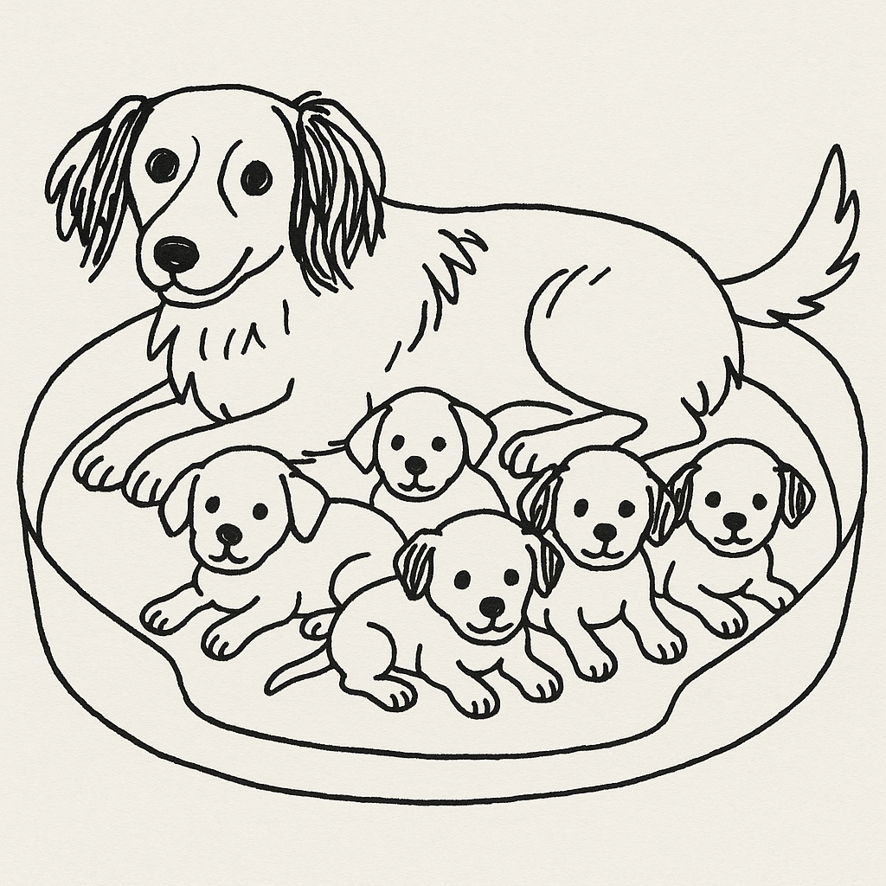

Integrating Large Language Model tools to our R workflows
Physalia Courses
2025-11-05
Background
Language Models?
Large Language Models?
Generative AI?

After drinking some water, the dog went back to the bed to feed her ___________.
Token probabilities
Let’s use promptr to explore the probabilistic nature of LLMs (and check if our OpenAI key is set up correctly)
- Let’s change the prompt and the max_tokens argument
Demo
Token Possibilities app by Garrick Aiden Buie
Language models
Predict and generate text by estimating the probability of tokens occurring in a given sequence.
Large language models
Add more parameters and massive datasets, enabling more complex tasks
Tokens
Basic units of text that LLMs use to process language. May be words, character sets, combinations of words, and punctuation.
Jim Amos on linkedin:
LLMs are language calculators: they use Natural Language Processing algorithms to intepret prompts then generate statistically plausible answers rendered from algebraic vectors – afterimages of training data compressed into non-euclidian space…
statistically plausible can be good enough for what we need
LLMs can help us with:
Text generation, translation, sentiment analysis, writing and debugging code, generating images and videos, etc.
However
Let’s consider:
- Growing evidence of negative effects on learning
- Biases
- Hype
- Valid anti-AI sentiment
- Issues with training material
- Provider intentions
- Lax security
🚫 Hype 🚫

“If you don’t become an AI/prompt engineer by tomorrow you’re a loser with no future”
“Your product needs AI or it will be worthless”
“All your training in data and coding was a waste of time”
Still…
I believe everyone deserves the ability to automate tedious tasks in their lives with computers - Simon Willison
..providing a way for people to talk with machines in plain language constitutes a dramatic step forward in making computing accessible to everyone - Carl Bergstrom (paraphrased)
Where are the models? Who makes them?
Many popular models live on the cloud
- OpenAI (Known for GPT series including ChatGPT)
- Google AI (Gemini models)
- Anthropic (Claude models)
- DeepSeek (DeepSeek R1)
- GitHub Copilot (multiple models)
Models != Providers
Companies train and release models for different use cases
- General purpose, lightweight models, coding, etc.
- Models may be open or proprietary
- Cloud providers may host multiple models from different makers
- Web-based chats include models + various tools (which are not necessarily evident)
Let’s explore
Models supported by Continue
LLM leaderboard
Cloud-Hosted models
- Relatively easy setup
- Create account, set up billing if applicable, get an API key
- Access to new and in-development models and massive computing power
Can be costly
Need internet access
We send our data to the API
Local models
Download smaller models on our own hardware
- Data not shared with a provider
- No ongoing costs
- Work offline
- Steep learning curve
- Large memory requirements
- Slower performance
Examples:
Ollama (Simplifies running open-source LLMs locally)
Hugging Face transformers (lots of open-source models)
Which model do I use?
Considerations
- Pricing
- Free tiers, token pricing, billing policies
- Context Windows
- Compatibility with our chosen tools
- Speed
- Performance
- Privacy
- Hardware
On pricing
Nothing is more costly than something given free of charge
- Japanese proverb.
nothing is offered for free unless there is something to be gained for the party involved
if we are not paying for the product, then we are the product
Why LLMs + R
Decent enough outputs
Working code -> actual problems solved & time saved
Updated and more recent knowledge cut-offs
Explosion of programs, packages and features since late 2024
Relevant keynotes, blog posts, demos, workshops
💡R + AI conference happening next week!
Cut down on context switching
- Growing support in R for AI tools
Shifting our attention between different tasks or programs can be tiring and make us less productive and efficient.
- Ask the chatbot in the browser
- Copy the response and paste it in R
- Share the errors or output with the chat
- Repeat (and potentially introduce errors)
Getting started
Coding with LLMs
Autocomplete
- Models suggest ‘ghost text’ as we type
- Very distracting during teaching
- Suggestions may be unhelpful but mostly harmless
Coding with LLMs
Chats
- Send prompts, get answers
- Often let us provide context and upload files
- Results can be copied or inserted directly to a script
- In the browser or through APIs
Coding with LLMs
Agents/Agentic
- Can run code and change files
- Follow a general plan and iterates
- Works on a task ‘autonomously’
- Token-hungry and potentially slow
- Makes us assume that results are correct
- Game-changing potential
Conversations with LLMs
Questions we might put in an LLM chat window?
> How do I add a subtitle to my ggplot figure?
> What are the arguments for pivot_wider()?
> I can’t join my table_1 object with my dat3 data frame, help!
Note the difference in the type of question. This will be important soon.
Request-response cycle
Different parts of the internet communicate through HTTP requests. This includes interacting with LLMs.
- Web searches
- File downloads
- Posting a status on social media
| Role | Description |
|---|---|
system_prompt |
Overarching instructions from that define the behavior of the assistant |
user |
Messages from the user interacting with the model |
assistant |
The model’s responses to the user |
Conversation with a chatbot
🧍: name three mammals
🤖: dog, cat, mouse
🧍: name three mammals
🤖: perro, gato, ratón
What happened?
System Prompts
Define specific instructions on role, tone, or constraints
No system prompt?
- Models default to base programming, leads to general and less predictable responses
System Prompts
Repeatable, consistent results suited to what we need to do.
“you are an expert R programmer that only uses base R”
“you are an expert R programmer that only uses base R. Do not add any comments. Do not explain the output”
“you are an expert R programmer. Comment the code in French”
ellmer prompt design Vignette
LLMs are stateless

LLMs are stateless
LLMs don’t retain memory of prior interactions
Context happens by sending all previous messages with each new request
Because of limitations on tokens and context size, there are truncation and optimization strategies at work
LLMs are stateless
Start new chats often
Split up tasks across chats
Use detailed system prompts